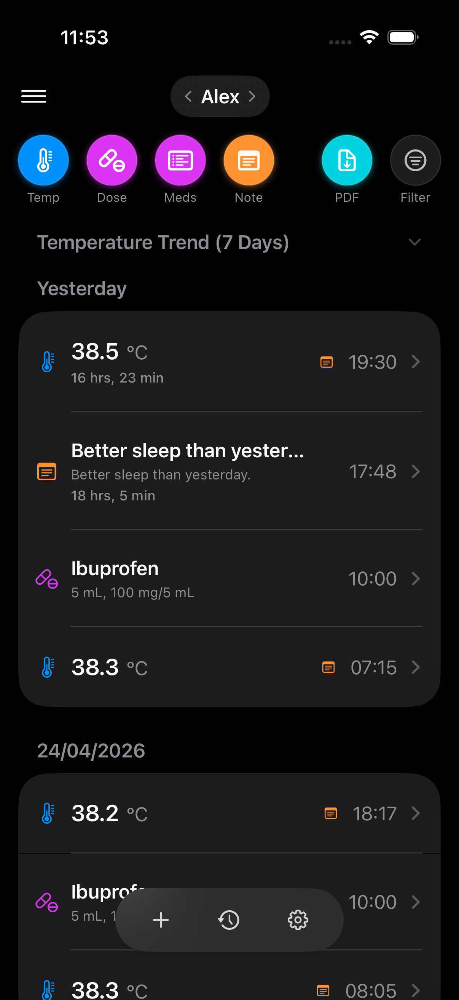

Senior contract engineering for systems that can’t afford to fail.
ION++ is the consulting practice of Ion Ionascu — a contract Technical Architect & Principal Software Engineer with 20+ years designing and writing production systems in Java, Rust and TypeScript on AWS, for media, telecoms, public sector and fintech. Built with an AI-assisted workflow around Claude Code; currently engaged with Klarna.
Senior engineering across the full lifecycle — architect, build, ship.
Solution & cloud architecture
Designing systems end to end — from domain model and API contracts to multi-account, multi-region AWS landscapes that are both fast and audit-ready.
Hands-on software development
20+ years writing production code, not just reviewing it: Java/Spring and Rust services, event streams and REST APIs, TypeScript and React front ends, Swift on iOS. Polyglot by habit — the language the problem deserves, not the one on the CV.
AI-assisted engineering
Claude Code is part of how I design and build, not a side experiment: custom skills, agents and hooks that encode team conventions, plus Copilot and Codex where they fit — inside large regulated codebases, with guardrails for security and quality. AWS Community Builder for AI Engineering.
Edge, identity & high-traffic web
Authentication and edge platforms serving tens of millions of users — global delivery, web application firewalls, bot mitigation and edge compute.
Infrastructure as Code
Terraform-first delivery: reproducible environments, OIDC-federated CI/CD, and infrastructure that engineers review like any other code.
Cross-cloud & integration
Bridging AWS with Azure and GCP — secure data access without replication, BigQuery analytics pipelines, hybrid VPNs.
A deep, opinionated stack — hand-picked for production.
- Java
- Rust
- TypeScript
- Node.js
- Swift
- AWS
- GCP
- Serverless compute
- Object storage
- Managed databases
- API gateways
- CDN & edge
- WAF
- Streaming & messaging
- BigQuery
- Spring Boot
- Spring Framework
- React
- SwiftUI
- Terraform
- Kafka
- SQL
- GitHub Actions
- Jenkins
- Kafka Connect
- AWS MSK
- Oracle
- PostgreSQL
- MySQL
- Couchbase
- DynamoDB
Track record in regulated, high-traffic environments.
Fintech & banking
Currently Principal Software Engineer on Klarna’s public edge infrastructure (contract, Aug 2026–present). Previously Java/Spring backends for underwriting, internal banking applications and high-throughput transaction processing at Neosurf, Barclays and others.
Media & entertainment
Identity platforms, edge delivery and microservices behind sky.com — supporting Sky Sports, Sky Go and the wider Sky digital portfolio.
Telecoms
Multi-region AWS architecture and standards-based REST APIs powering Vodafone’s offers platform across multiple operating companies and external partners.
Public sector
Cross-cloud secure data access (AWS↔Azure) and a domain-specific language for automated survey validation deployed at national scale.
Track record in numbers.
The person behind ION++.
I’ve been writing production software for 20 years, in environments where downtime is measured in lost revenue and headlines.
I work as an independent contractor through ION++ Ltd, a UK-registered company. My focus is the messy middle — the architecture and lead-developer work where someone has to own end-to-end delivery of a system that’s real, regulated and in production at scale: designing the system, then writing a meaningful share of the code in Java, Rust, TypeScript or Swift as the problem demands.
I’m currently Principal Software Engineer at Klarna, engaged through ION++. I’ve been the architect behind Sky’s Identity Portal (~30M user profiles), the technical lead on Vodafone’s offers platform across 7+ operating companies, and the cloud engineer on cross-cloud proofs-of-concept for the UK Home Office. Spring since 1.2; Java since 1.4; AWS for over twelve years; Rust and AI engineering as the current frontier.
Claude Code is my daily environment for design and implementation. I write my own skills, agents and hooks so the tooling carries my conventions and review standards into every codebase I touch — an engineering discipline with guardrails, not autocomplete.
I’m equally comfortable producing a roadmap that earns board confidence and shipping the Java, Rust and Terraform that delivers it — from a fixed-fee architecture review to a long-running lead-developer engagement.
Independent products, shipped end-to-end.
A privacy-first iOS app for organising health information for yourself and people you care about.
Designed and shipped solo: SwiftUI frontend with a mixed cloud backend across Firebase and AWS, including Rust Lambda services, DynamoDB workloads, and Grafana observability. StoreKit 2 entitlements, optional iCloud sync via CloudKit, GDPR-aligned local-first data — the same engineering rigour I bring to client work, applied to my own product.
GenAI is used heavily throughout delivery for code generation and iteration, especially with Claude Code, GitHub Copilot, and Codex. AI-powered summaries are also in active work-in-progress using OpenAI APIs.

Notes from the field — published essays.
The Return of Assembly: When LLMs No Longer Need High-Level Languages
A thought experiment on what happens when LLMs can reason and emit code directly at the hardware level — and what that means for the abstractions we’ve built.
Why Not One-Time-Use Banks (in Terraform)? Gen-AI Says: Maybe.
Using banking as an intentionally extreme example to explore how Gen-AI and infrastructure-as-code may reshape platform thinking and where real value sits.
AI in Software Development: Reading Between the Lines of the DORA 2025 Report
A working engineer’s read of what the latest DORA findings actually say about AI’s effect on delivery — beyond the headline numbers.
Have a project that needs a senior pair of hands?
I’m currently engaged with Klarna. For advisory work, architecture reviews or a conversation about a future engagement, LinkedIn is the fastest route — message directly, and you’ll get a sensible next step in return.
View profile on LinkedIn